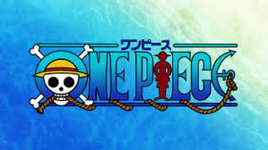
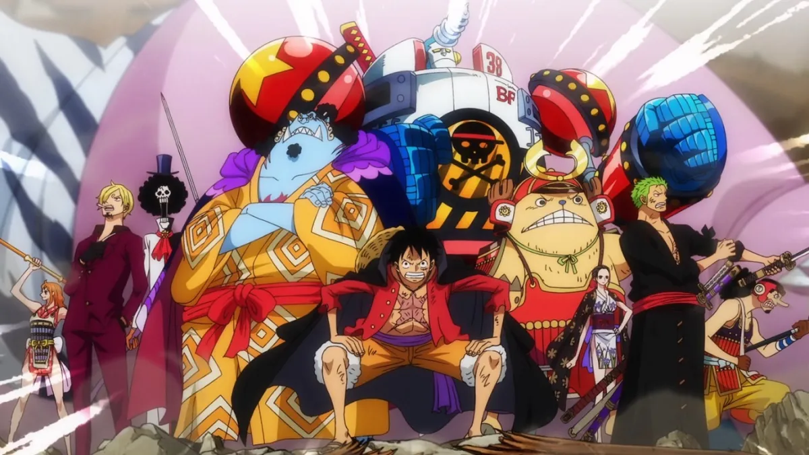
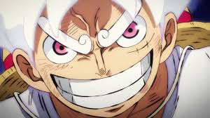
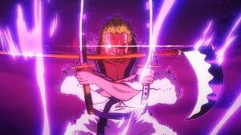
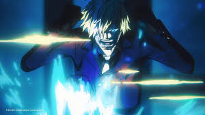

Seguem imagens do anime mais hype do século, criado por Eiichiro Oda:
Créditos: https://onepiece.fandom.com/pt/wiki/One_Piece_(Anime)
Créditos: https://bitsebaits.com/2024/09/05/ficha-de-dados-dos-membros-dos-chapeus-de-palha/
Créditos: https://www.sportskeeda.com/anime/one-piece-how-luffy-become-nika-the-gear-5-transformation-explained
Créditos: https://www.reddit.com/r/OnePiece/comments/ohv0t9/zoro_purgatory_onigiri_tattoo/?tl=pt-br
Créditos: https://geekdama.com.br/news/one-piece-anime-1061-previa-sanji-ifrit-jambe/
Voltar para o Início